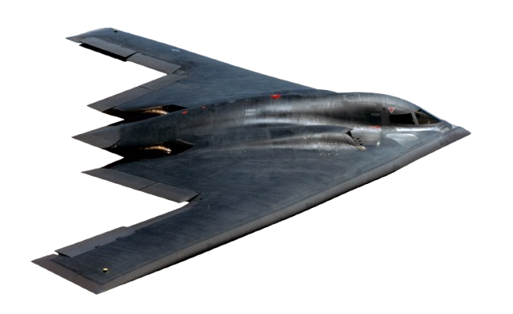

Historia del B-2 Spirit
Tecnología furtiva explicada
Misiones y despliegues
Comparaciónes
Datos interesantes
El Northrop Grumman B-2 Spirit
Datos Generales
🛩 Velocidad máxima: 1,010 km/h
📏 Envergadura: 52.4 metros
⚙️ Motores: 4 × General Electric F118-GE-100 turbofans
💣 Capacidad de carga: Hasta 18,000 kg de armamento
🪖 Tecnología furtiva: Diseño especial para evitar radares
🛡 Autonomía: 11,100 km sin reabastecimiento (puede ser extendida en vuelo)
💰Precio: 2.100 millones de dólares por unidad
